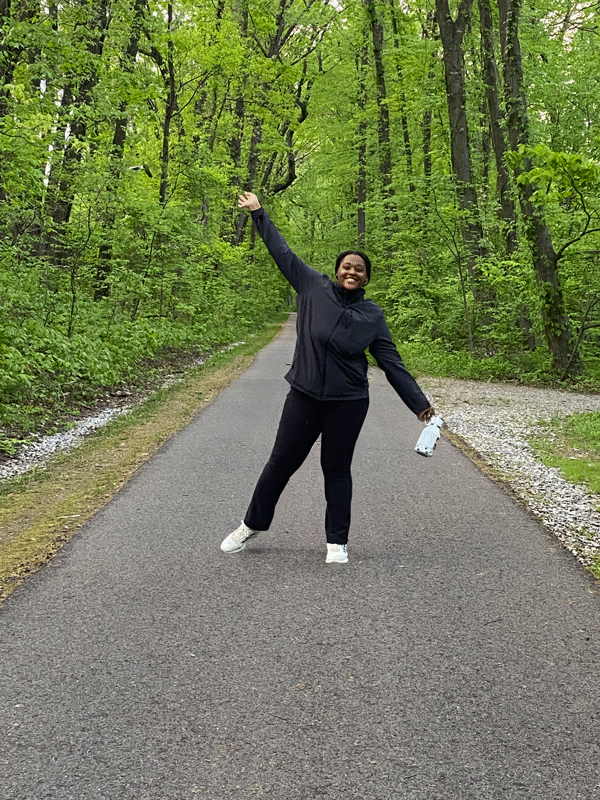

Hi there! I am Kylah: a queer, Caribbean-American digital creative based in the Bronx, Ny.From a young age I struggled with remembering events and moments in my life, and so I turned to a few media outlets–photography included– as a crutch. I was able to capture the beauty of my neighborhood, and everywhere I ventured. I use the urban landscape around me as inspiration. The rich color around me–from subway graffiti to the cooper-rust on scaffolding, as a palette for my work. I am hoping that audiences will view my work as a homage to my upbringing and the community that raised me. However, many of my photos are now lost, yet still with me is that passion to capture the world around me. Being aware of my disability early-on gave me a different perspective on life. I became hyper-aware of how truly inaccessible our society currently is, and so I’ve decided to study the ethnography of 20th-21st century culture–using digital media to present my findings.
